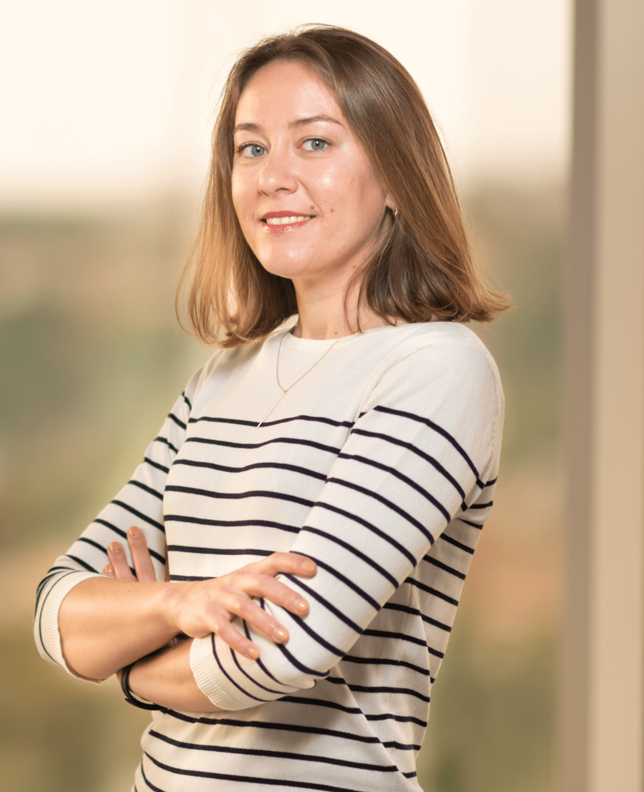

September 2025
Returning from Extended Leave
Olya will be on extended leave from work, resuming her duties in September 2025. Check out her latest developments and upcoming projects as she returns to TU Delft.
Associate Professor · TU Delft
Tech Ethics ·
AI DeMoS Lab
Journal of Human-Technology Relations
About
Olya Kudina is an ethicist of technology focusing on the dynamic interaction between human values and technologies. Currently, she is an Associate Professor at Delft University of Technology (the Netherlands), where she helps students and organisations integrate ethical reflection and cultural sensitivity as essential counterparts to technology development.

Olya is co-director of the AI DeMoS Lab, which focuses on the relation between AI and democracy and on responsible AI development practices. She is also co-founder and co-editor-in-chief of the diamond open-access Journal of Human-Technology Relations.
Her previous work outside academia includes diplomacy, (inter)governmental work, data protection and privacy. Together with her expertise in empirical philosophy, Olya connects ethics, design, and governance in providing strategic foresight and developing adaptable technologies.
Expertise
Olya is an interdisciplinary researcher in philosophy and ethics of technology who explores the relation between human values and technologies. Her recent focus has been on AI and democracy in the framework of the AI DeMoS Lab she founded and co-leads.
Her philosophical work is inspired by phenomenology, Dewey's pragmatism, and bioethics, integrating qualitative empirical methods from STS and psychology. She anticipates the ethical challenges and opportunities of emerging technologies by combining different academic practices and fields.
Her recent research explores the responsible use and design of Natural Language Processing and Automatic Speech Recognition algorithms — with applications in voice assistants such as Alexa and conversational agents such as ChatGPT.
Olya teaches across bachelor, master, and PhD levels. She pursues creative teaching that invites students to integrate theoretical and stakeholder perspectives, analysing contemporary case studies and engaging them in responsible design practices.
Latest
September 2025
Olya will be on extended leave from work, resuming her duties in September 2025. Check out her latest developments and upcoming projects as she returns to TU Delft.
December 2024
In December 2024, Olya was promoted to Associate Professor at Delft University of Technology.
December 2024
Olya's reflection on her recent trip home to Ukraine from a lens of human-technology relations: "Daily life in times of war: a technological mediation perspective."
December 2024
New 2024 editorial with Peter-Paul Verbeek: "Follow the particular and the human-technology relation in the context of technological systems and global events."
December 2024
Olya presented on systematic literature review as a method for philosophical analysis, including the environmental impact of AI and its potential applications.
2 December 2024
Olya spoke at Rotterdam City Hall for the Batavian Society for Experimental Philosophy: "Deepfakes and Democracy: Is there a Place for Trust in the Age of Deception?"
Get in touch
For research collaboration, media requests, or speaking engagements, reach out via email.
o.kudina@tudelft.nl